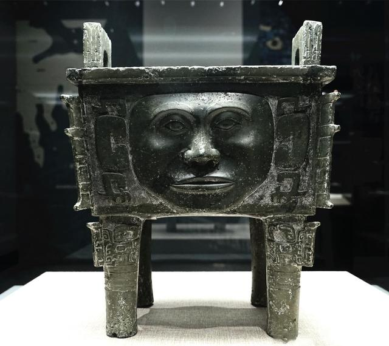

今天中国国家博物馆联合湖南省博物馆、南京博物院、山西博物院、陕西历史博物馆、广东省博物馆和浙江省博物馆，一甩往日严肃脸，让朋友圈频频刷屏。通过这种崭新的方法将那些看似遥不可及的古代文物近距离的跟大众连接起来，真正做到“让文物活起来”。
1、中国国家博物馆
青铜面具 商代 高37.5厘米、重0.6千克。1986年四川省广汉县三星堆出土，现藏于中国国家博物馆
中国国家博物馆参赛的“戏精”是三星堆出土青铜面具。铜人头的面部方正，顶部平展，铸有子母口，以便戴冠。面部表情粗放，双眼圆睁，阔鼻，鼻梁突起，双唇紧闭。双耳垂穿孔，并以云雷纹为饰，脑后铸有长辫，发丝根根可见，颈部可接插木柄，其形象当与蜀人中的巫师有关。
实际上青铜面具是一种古代假面。我国多出地方都有出土，形状各异，其中，以四川广汉三星堆出土的青铜面具最为代表。这些青铜面具“凸目、高鼻、宽嘴、大耳”酷似外星人，造型极为独特，也被人们俗称为“千里眼、顺风耳”，这样的造型在全世界都是独一无二的。
击鼓说唱俑 东汉 通高55厘米。1957年出土于四川成都天回山东汉崖墓，现藏于中国国家博物馆
汉代民间极为盛行说唱表演。汉代俳优大致以调谑、滑稽、讽刺的表演为主，并以此来博得主人和观赏者的笑颜。他们往往随侍主人左右，作即兴表演，随时供主人取乐。表演时，他们一般边击鼓边歌唱。当时的皇室贵族、豪富大吏蓄养俳优之风甚盛。汉武帝说：“俳优侏儒之笑，不乏于前”。
击鼓说唱俑是陪葬俑中少有的传神佳作。陶俑上戴帻，额前有花饰，袒胸露腹，着裤赤足，左臂环抱一扁鼓，右手举槌欲击，作击鼓说唱表演，神态诙谐，动作夸张，是一件富有浓厚民间气息和地方风貌的优秀雕塑作品。
2、湖南省博物馆
大禾人面纹方鼎 商代 高38.5厘米 长29.8厘米 宽23.7厘米。约1958—1959年出土于湖南宁乡县黄材镇炭河里乡，现藏于湖南省博物馆
数据显示，只有不到1%的心脏病与性行为有关。相反，长远而言，健康的性生活会带来健康的心脏，降低心脏病发作的危险性。
一项针对中年男性的16年长期研究发现，保持每周两次以上性生活频率的男性，比一个月一次的同性心脏病发的风险低得多。
大禾人面纹方鼎是中国唯一的以人面纹为饰的鼎，年代为商代晚期。方鼎颜色碧绿，器身略呈矩形，器身外表四周饰半浮雕的人面。人面周围有云雷纹，人面的额部两侧有角、下巴两侧有爪。鼎腹内壁铸“大禾”两字铭文，因此鼎亦被称为大禾方鼎。
大禾人面纹方鼎
商、周青铜器以兽面纹作主题纹饰较为常见，人面纹饰较为稀有珍贵，此鼎以四个相同的人面纹装饰器体的主要部位，更加奇特。有的专家认为这组人面纹有爪而无身，属于传说中“有首无身”、贪吃人的凶兽饕餮一类怪神。究竟为何采用如此写实的人面纹作主题装饰，至今仍是个谜。
3、南京博物院
青花寿山福海纹香炉 明代 炉高58厘米 造型仿青铜鼎，现收藏于南京博物院
这座香炉正等着被你捧在手上，虔诚的焚香。它记录的是一统江山、永久安定的期待，虽然体型有点庞大，但是拥有一颗少女心呢。
它与一般白地蓝花的青花器不同，是蓝地白花，即以青花为地，白釉表现海浪。浓重的青花发色、青料略有蕴散的缺陷美、仿青铜鼎的造型与满器似要外溢的海浪相融于一体，使青花炉具有憾人心魄的艺术魅力，令观者为之动容。完整的永乐青花寿山福海纹炉仅存一、二件，足以见其珍贵。
4、山西博物院
鸮卣 商代 高19.7厘米，口长径12厘米，短径8.6厘米，1956年石楼县二郎坡村出土，现藏于山西博物院
鸮卣（xiāoyǒu）因为形似“愤怒的小鸟”而蹿红互联网，可以说是文物戏精里面的大。鸮是猫头鹰，卣是一种盛酒器。形如两鸮相背而立。盖为双鸮首，环目，尖喙，弯眉，盖中央置四阿顶方柱钮，饰雷纹。腹作双鸮身，子口微敛，垂鼓腹饰卷曲羽翼纹。身下为四爪，两两相背。盖腹相合，两鸮昂首背立。商代晚期青铜器精品。不仅实用，也是精美的艺术品。